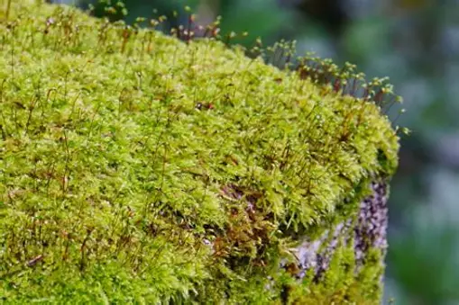
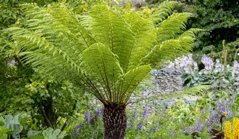
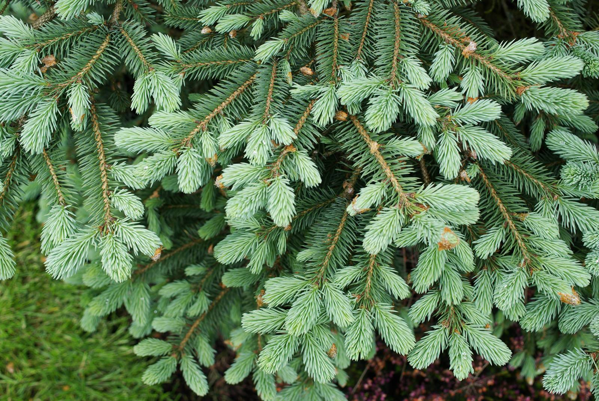

Algues
Thalle, vie aquatique
> 1milliard d'années
Mousses
Cuticule, stomates, rhizoides
> envrion 470 Ma ° Ordovicien
Fougères
Vaisseau, lignine, racines
> environ 430 Ma ° Silurien
Conifères
Pollen, graine nue
> environ 370 Ma ° DénovienGraminées
Fleur, fruit, pollinisation par le vent
> environ 130 Ma ° CrétacéDicotylédones
Fleur, fruit, pollinisation par les insectes
> environ 130 Ma ° Crétacé